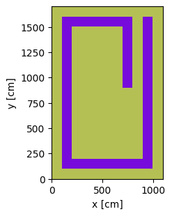
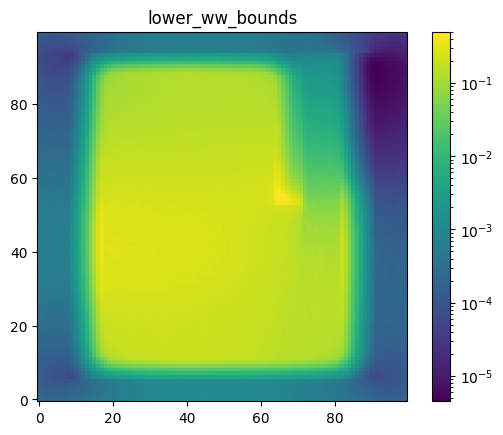
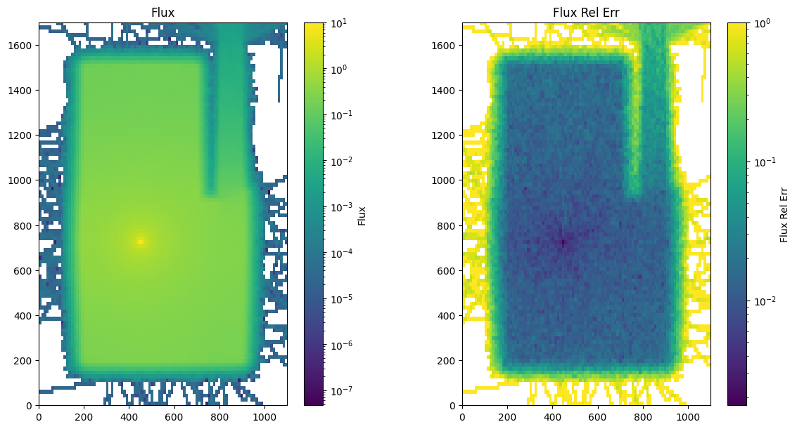
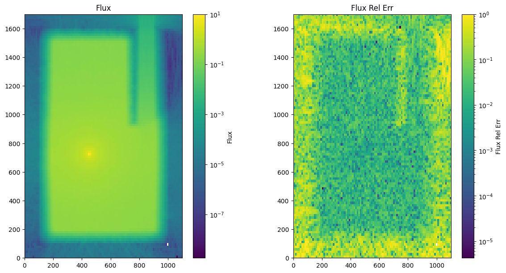

FW CADIS Weight Windows#
Creating and utilizing a weight window to accelerate deep shielding simulations
This example simulates a shield room / bunker with corridor entrance and a neutron source in the center of the room. This example implements a FW-CADIS of weight window generation.
In this tutorial we shall focus on generating a weight window to accelerate the simulation of particles through a shield.
Weight Windows are found using the FW-CADIS method and used to accelerate the simulation.
The variance reduction method used for this simulation is well documented in the OpenMC documentation https://docs.openmc.org/en/stable/usersguide/variance_reduction.html
First we import openmc and other packages needed for the example and configure the nuclear data path
import time # used to time the simulation
import numpy as np
import copy
from matplotlib import pyplot as plt
from matplotlib.colors import LogNorm # used for plotting log scale graphs
import openmc
from pathlib import Path
# Setting the cross section path to the correct location in the docker image.
# If you are running this outside the docker image you will have to change this path to your local cross section path.
openmc.config['cross_sections'] = Path.home() / 'nuclear_data' / 'cross_sections.xml'
We create a couple of materials for the simulation
mat_air = openmc.Material(name="air")
mat_air.add_element("N", 0.784431)
mat_air.add_element("O", 0.210748)
mat_air.add_element("Ar", 0.0046)
mat_air.set_density("g/cc", 0.001205)
mat_concrete = openmc.Material(name='concrete')
mat_concrete.add_element("H",0.168759)
mat_concrete.add_element("C",0.001416)
mat_concrete.add_element("O",0.562524)
mat_concrete.add_element("Na",0.011838)
mat_concrete.add_element("Mg",0.0014)
mat_concrete.add_element("Al",0.021354)
mat_concrete.add_element("Si",0.204115)
mat_concrete.add_element("K",0.005656)
mat_concrete.add_element("Ca",0.018674)
mat_concrete.add_element("Fe",0.00426)
mat_concrete.set_density("g/cm3", 2.3)
materials_continuous_xs = openmc.Materials([mat_air, mat_concrete])
Now we define and plot the geometry. This geometry is defined by parameters for every width and height. The parameters input into the geometry in a stacked manner so they can easily be adjusted to change the geometry without creating overlapping cells.
width_a = 100
width_b = 100
width_c = 500
width_d = 100
width_e = 100
width_f = 100
width_g = 100
depth_a = 100
depth_b = 100
depth_c = 700
depth_d = 600
depth_e = 100
depth_f = 100
height_j = 100
height_k = 500
height_l = 100
xplane_0 = openmc.XPlane(x0=0, boundary_type="vacuum")
xplane_1 = openmc.XPlane(x0=xplane_0.x0 + width_a)
xplane_2 = openmc.XPlane(x0=xplane_1.x0 + width_b)
xplane_3 = openmc.XPlane(x0=xplane_2.x0 + width_c)
xplane_4 = openmc.XPlane(x0=xplane_3.x0 + width_d)
xplane_5 = openmc.XPlane(x0=xplane_4.x0 + width_e)
xplane_6 = openmc.XPlane(x0=xplane_5.x0 + width_f)
xplane_7 = openmc.XPlane(x0=xplane_6.x0 + width_g, boundary_type="vacuum")
yplane_0 = openmc.YPlane(y0=0, boundary_type="vacuum")
yplane_1 = openmc.YPlane(y0=yplane_0.y0 + depth_a)
yplane_2 = openmc.YPlane(y0=yplane_1.y0 + depth_b)
yplane_3 = openmc.YPlane(y0=yplane_2.y0 + depth_c)
yplane_4 = openmc.YPlane(y0=yplane_3.y0 + depth_d)
yplane_5 = openmc.YPlane(y0=yplane_4.y0 + depth_e)
yplane_6 = openmc.YPlane(y0=yplane_5.y0 + depth_f, boundary_type="vacuum")
zplane_1 = openmc.ZPlane(z0=0, boundary_type="vacuum")
zplane_2 = openmc.ZPlane(z0=zplane_1.z0 + height_j)
zplane_3 = openmc.ZPlane(z0=zplane_2.z0 + height_k)
zplane_4 = openmc.ZPlane(z0=zplane_3.z0 + height_l, boundary_type="vacuum")
outside_left_region = +xplane_0 & -xplane_1 & +yplane_1 & -yplane_5 & +zplane_1 & -zplane_4
wall_left_region = +xplane_1 & -xplane_2 & +yplane_2 & -yplane_4 & +zplane_2 & -zplane_3
wall_right_region = +xplane_5 & -xplane_6 & +yplane_2 & -yplane_5 & +zplane_2 & -zplane_3
wall_top_region = +xplane_1 & -xplane_4 & +yplane_4 & -yplane_5 & +zplane_2 & -zplane_3
outside_top_region = +xplane_0 & -xplane_7 & +yplane_5 & -yplane_6 & +zplane_1 & -zplane_4
wall_bottom_region = +xplane_1 & -xplane_6 & +yplane_1 & -yplane_2 & +zplane_2 & -zplane_3
outside_bottom_region = +xplane_0 & -xplane_7 & +yplane_0 & -yplane_1 & +zplane_1 & -zplane_4
wall_middle_region = +xplane_3 & -xplane_4 & +yplane_3 & -yplane_4 & +zplane_2 & -zplane_3
outside_right_region = +xplane_6 & -xplane_7 & +yplane_1 & -yplane_5 & +zplane_1 & -zplane_4
room_region = +xplane_2 & -xplane_3 & +yplane_2 & -yplane_4 & +zplane_2 & -zplane_3
gap_region = +xplane_3 & -xplane_4 & +yplane_2 & -yplane_3 & +zplane_2 & -zplane_3
corridor_region = +xplane_4 & -xplane_5 & +yplane_2 & -yplane_5 & +zplane_2 & -zplane_3
roof_region = +xplane_1 & -xplane_6 & +yplane_1 & -yplane_5 & +zplane_1 & -zplane_2
floor_region = +xplane_1 & -xplane_6 & +yplane_1 & -yplane_5 & +zplane_3 & -zplane_4
outside_left_cell = openmc.Cell(region=outside_left_region, fill=mat_air)
outside_right_cell = openmc.Cell(region=outside_right_region, fill=mat_air)
outside_top_cell = openmc.Cell(region=outside_top_region, fill=mat_air)
outside_bottom_cell = openmc.Cell(region=outside_bottom_region, fill=mat_air)
wall_left_cell = openmc.Cell(region=wall_left_region, fill=mat_concrete)
wall_right_cell = openmc.Cell(region=wall_right_region, fill=mat_concrete)
wall_top_cell = openmc.Cell(region=wall_top_region, fill=mat_concrete)
wall_bottom_cell = openmc.Cell(region=wall_bottom_region, fill=mat_concrete)
wall_middle_cell = openmc.Cell(region=wall_middle_region, fill=mat_concrete)
room_cell = openmc.Cell(region=room_region, fill=mat_air)
gap_cell = openmc.Cell(region=gap_region, fill=mat_air)
corridor_cell = openmc.Cell(region=corridor_region, fill=mat_air)
roof_cell = openmc.Cell(region=roof_region, fill=mat_concrete)
floor_cell = openmc.Cell(region=floor_region, fill=mat_concrete)
geometry = openmc.Geometry(
[
outside_bottom_cell,
outside_top_cell,
outside_left_cell,
outside_right_cell,
wall_left_cell,
wall_right_cell,
wall_top_cell,
wall_bottom_cell,
wall_middle_cell,
room_cell,
gap_cell,
corridor_cell,
roof_cell,
floor_cell,
]
)
Now we plot the geometry and color by materials.
plot = geometry.plot(basis='xy', color_by='material')
plot.figure.savefig('geometry_top_down_view.png', bbox_inches="tight")

Next we create a point source, this also uses the same geometry parameters to place in the center of the room regardless of the values of the parameters.
# location of the point source
source_x = width_a + width_b + width_c * 0.5
source_y = depth_a + depth_b + depth_c * 0.75
source_z = height_j + height_k * 0.5
space = openmc.stats.Point((source_x, source_y, source_z))
# all (100%) of source particles are 2.5MeV energy
source = openmc.IndependentSource(
space=space,
angle=openmc.stats.Isotropic(),
energy=openmc.stats.Discrete([2.5e6], [1.0]),
particle="neutron"
)
Make the settings for our continuous energy MC solver
# Create settings
settings = openmc.Settings()
settings.run_mode = "fixed source"
settings.source = source
settings.particles = 80
settings.batches = 100
# Normally in fixed source problems we don't use inactivie batches.
# However when using Random Ray we do need to use inactive batches
# More info here https://docs.openmc.org/en/stable/usersguide/random_ray.html#batches
settings.inactive = 50
ce_model = openmc.Model(geometry, materials_continuous_xs, settings)
At this point, we have a valid continuous energy Monte Carlo model!
Convert to Multigroup and Random Ray#
We begin by making a clone of our original continuous energy deck, and then convert it to multigroup.
This step will automatically compute material-wise multigroup cross sections for us by running a continous energy OpenMC simulation internally.
rr_model = copy.deepcopy(ce_model)
rr_model.convert_to_multigroup(
# I tend to use "stochastic_slab" method here.
# Using the "material_wise" method is more accurate but slower
# In problems where one needs weight windows to solve we don't really want
# the calculation of weight windows to be slow.
# In extreme cases the "material_wise" method could require its own weight windows to solve.
# The "stochastic_slab" method is much faster and works well for most problems.
# more details here https://docs.openmc.org/en/latest/usersguide/random_ray.html#the-easy-way
method="stochastic_slab",
overwrite_mgxs_library=True, # overrights the
nparticles=2000 # this is the default but can be adjusted upward to improve the fidelity of the generated cross section library
)
/home/jon/.neutronicsworkshop/lib/python3.11/site-packages/openmc/mixin.py:70: IDWarning: Another Filter instance already exists with id=40.
warn(msg, IDWarning)
/home/jon/.neutronicsworkshop/lib/python3.11/site-packages/openmc/mixin.py:70: IDWarning: Another Filter instance already exists with id=2.
warn(msg, IDWarning)
/home/jon/.neutronicsworkshop/lib/python3.11/site-packages/openmc/mixin.py:70: IDWarning: Another Filter instance already exists with id=11.
warn(msg, IDWarning)
%%%%%%%%%%%%%%%
%%%%%%%%%%%%%%%%%%%%%%%%
%%%%%%%%%%%%%%%%%%%%%%%%%%%%%%
%%%%%%%%%%%%%%%%%%%%%%%%%%%%%%%%%%
%%%%%%%%%%%%%%%%%%%%%%%%%%%%%%%%%%%%%%
%%%%%%%%%%%%%%%%%%%%%%%%%%%%%%%%%%%%%%%%
%%%%%%%%%%%%%%%%%%%%%%%%
%%%%%%%%%%%%%%%%%%%%%%%%
############### %%%%%%%%%%%%%%%%%%%%%%%%
################## %%%%%%%%%%%%%%%%%%%%%%%
################### %%%%%%%%%%%%%%%%%%%%%%%
#################### %%%%%%%%%%%%%%%%%%%%%%
##################### %%%%%%%%%%%%%%%%%%%%%
###################### %%%%%%%%%%%%%%%%%%%%
####################### %%%%%%%%%%%%%%%%%%
####################### %%%%%%%%%%%%%%%%%
###################### %%%%%%%%%%%%%%%%%
#################### %%%%%%%%%%%%%%%%%
################# %%%%%%%%%%%%%%%%%
############### %%%%%%%%%%%%%%%%
############ %%%%%%%%%%%%%%%
######## %%%%%%%%%%%%%%
%%%%%%%%%%%
| The OpenMC Monte Carlo Code
Copyright | 2011-2025 MIT, UChicago Argonne LLC, and contributors
License | https://docs.openmc.org/en/latest/license.html
Version | 0.15.3-dev144
Commit Hash | 14ab4d3b6f3d77b73e8bb480782bbe1bdd56483d
Date/Time | 2025-06-13 16:24:02
OpenMP Threads | 16
Reading model XML file 'model.xml' ...
Reading cross sections XML file...
Reading N14 from /home/jon/nuclear_data/neutron/N14.h5
Reading N15 from /home/jon/nuclear_data/neutron/N15.h5
Reading O16 from /home/jon/nuclear_data/neutron/O16.h5
Reading O17 from /home/jon/nuclear_data/neutron/O17.h5
Reading O18 from /home/jon/nuclear_data/neutron/O18.h5
Reading Ar36 from /home/jon/nuclear_data/neutron/Ar36.h5
WARNING: Negative value(s) found on probability table for nuclide Ar36 at 294K
Reading Ar38 from /home/jon/nuclear_data/neutron/Ar38.h5
Reading Ar40 from /home/jon/nuclear_data/neutron/Ar40.h5
Reading H1 from /home/jon/nuclear_data/neutron/H1.h5
Reading H2 from /home/jon/nuclear_data/neutron/H2.h5
Reading C12 from /home/jon/nuclear_data/neutron/C12.h5
Reading C13 from /home/jon/nuclear_data/neutron/C13.h5
Reading Na23 from /home/jon/nuclear_data/neutron/Na23.h5
Reading Mg24 from /home/jon/nuclear_data/neutron/Mg24.h5
Reading Mg25 from /home/jon/nuclear_data/neutron/Mg25.h5
Reading Mg26 from /home/jon/nuclear_data/neutron/Mg26.h5
Reading Al27 from /home/jon/nuclear_data/neutron/Al27.h5
Reading Si28 from /home/jon/nuclear_data/neutron/Si28.h5
Reading Si29 from /home/jon/nuclear_data/neutron/Si29.h5
Reading Si30 from /home/jon/nuclear_data/neutron/Si30.h5
Reading K39 from /home/jon/nuclear_data/neutron/K39.h5
Reading K40 from /home/jon/nuclear_data/neutron/K40.h5
Reading K41 from /home/jon/nuclear_data/neutron/K41.h5
Reading Ca40 from /home/jon/nuclear_data/neutron/Ca40.h5
Reading Ca42 from /home/jon/nuclear_data/neutron/Ca42.h5
Reading Ca43 from /home/jon/nuclear_data/neutron/Ca43.h5
Reading Ca44 from /home/jon/nuclear_data/neutron/Ca44.h5
Reading Ca46 from /home/jon/nuclear_data/neutron/Ca46.h5
Reading Ca48 from /home/jon/nuclear_data/neutron/Ca48.h5
Reading Fe54 from /home/jon/nuclear_data/neutron/Fe54.h5
Reading Fe56 from /home/jon/nuclear_data/neutron/Fe56.h5
Reading Fe57 from /home/jon/nuclear_data/neutron/Fe57.h5
Reading Fe58 from /home/jon/nuclear_data/neutron/Fe58.h5
Minimum neutron data temperature: 294.0 K
Maximum neutron data temperature: 294.0 K
Preparing distributed cell instances...
Writing summary.h5 file...
Maximum neutron transport energy: 20000000.0 eV for N15
===============> FIXED SOURCE TRANSPORT SIMULATION <===============
Simulating batch 1
Simulating batch 2
Simulating batch 3
Simulating batch 4
Simulating batch 5
Simulating batch 6
Simulating batch 7
Simulating batch 8
Simulating batch 9
Simulating batch 10
Simulating batch 11
Simulating batch 12
Simulating batch 13
Simulating batch 14
Simulating batch 15
Simulating batch 16
Simulating batch 17
Simulating batch 18
Simulating batch 19
Simulating batch 20
Simulating batch 21
Simulating batch 22
Simulating batch 23
Simulating batch 24
Simulating batch 25
Simulating batch 26
Simulating batch 27
Simulating batch 28
Simulating batch 29
Simulating batch 30
Simulating batch 31
Simulating batch 32
Simulating batch 33
Simulating batch 34
Simulating batch 35
Simulating batch 36
Simulating batch 37
Simulating batch 38
Simulating batch 39
Simulating batch 40
Simulating batch 41
Simulating batch 42
Simulating batch 43
Simulating batch 44
Simulating batch 45
Simulating batch 46
Simulating batch 47
Simulating batch 48
Simulating batch 49
Simulating batch 50
Simulating batch 51
Simulating batch 52
Simulating batch 53
Simulating batch 54
Simulating batch 55
Simulating batch 56
Simulating batch 57
Simulating batch 58
Simulating batch 59
Simulating batch 60
Simulating batch 61
Simulating batch 62
Simulating batch 63
Simulating batch 64
Simulating batch 65
Simulating batch 66
Simulating batch 67
Simulating batch 68
Simulating batch 69
Simulating batch 70
Simulating batch 71
Simulating batch 72
Simulating batch 73
Simulating batch 74
Simulating batch 75
Simulating batch 76
Simulating batch 77
Simulating batch 78
Simulating batch 79
Simulating batch 80
Simulating batch 81
Simulating batch 82
Simulating batch 83
Simulating batch 84
Simulating batch 85
Simulating batch 86
Simulating batch 87
Simulating batch 88
Simulating batch 89
Simulating batch 90
Simulating batch 91
Simulating batch 92
Simulating batch 93
Simulating batch 94
Simulating batch 95
Simulating batch 96
Simulating batch 97
Simulating batch 98
Simulating batch 99
Simulating batch 100
Simulating batch 101
Simulating batch 102
Simulating batch 103
Simulating batch 104
Simulating batch 105
Simulating batch 106
Simulating batch 107
Simulating batch 108
Simulating batch 109
Simulating batch 110
Simulating batch 111
Simulating batch 112
Simulating batch 113
Simulating batch 114
Simulating batch 115
Simulating batch 116
Simulating batch 117
Simulating batch 118
Simulating batch 119
Simulating batch 120
Simulating batch 121
Simulating batch 122
Simulating batch 123
Simulating batch 124
Simulating batch 125
Simulating batch 126
Simulating batch 127
Simulating batch 128
Simulating batch 129
Simulating batch 130
Simulating batch 131
Simulating batch 132
Simulating batch 133
Simulating batch 134
Simulating batch 135
Simulating batch 136
Simulating batch 137
Simulating batch 138
Simulating batch 139
Simulating batch 140
Simulating batch 141
Simulating batch 142
Simulating batch 143
Simulating batch 144
Simulating batch 145
Simulating batch 146
Simulating batch 147
Simulating batch 148
Simulating batch 149
Simulating batch 150
Simulating batch 151
Simulating batch 152
Simulating batch 153
Simulating batch 154
Simulating batch 155
Simulating batch 156
Simulating batch 157
Simulating batch 158
Simulating batch 159
Simulating batch 160
Simulating batch 161
Simulating batch 162
Simulating batch 163
Simulating batch 164
Simulating batch 165
Simulating batch 166
Simulating batch 167
Simulating batch 168
Simulating batch 169
Simulating batch 170
Simulating batch 171
Simulating batch 172
Simulating batch 173
Simulating batch 174
Simulating batch 175
Simulating batch 176
Simulating batch 177
Simulating batch 178
Simulating batch 179
Simulating batch 180
Simulating batch 181
Simulating batch 182
Simulating batch 183
Simulating batch 184
Simulating batch 185
Simulating batch 186
Simulating batch 187
Simulating batch 188
Simulating batch 189
Simulating batch 190
Simulating batch 191
Simulating batch 192
Simulating batch 193
Simulating batch 194
Simulating batch 195
Simulating batch 196
Simulating batch 197
Simulating batch 198
Simulating batch 199
Simulating batch 200
Creating state point statepoint.200.h5...
=======================> TIMING STATISTICS <=======================
Total time for initialization = 4.5565e+00 seconds
Reading cross sections = 4.5280e+00 seconds
Total time in simulation = 4.7060e+01 seconds
Time in transport only = 4.0052e+01 seconds
Time in active batches = 4.7060e+01 seconds
Time accumulating tallies = 6.8070e+00 seconds
Time writing statepoints = 1.0667e-01 seconds
Total time for finalization = 1.6930e-06 seconds
Total time elapsed = 5.1637e+01 seconds
Calculation Rate (active) = 8499.84 particles/second
============================> RESULTS <============================
Leakage Fraction = 0.00000 +/- 0.00000
We now have a valid multigroup Monte Carlo input deck, complete with a “mgxs.h5” multigroup cross section library file. Next, we convert the model to use random ray instead of multigroup monte carlo.
Random ray is needed for use with the FW-CADIS algorithm (which requires global adjoint flux information that the random ray solver generates).
The below function will analyze the geometry and initialize the random ray solver with reasonable parameters.
Users are free to tweak these parameters to improve the performance of the random ray solver, but the defaults are likely sufficient for weight window generation purposes for most cases.
rr_model.convert_to_random_ray()
Create a Mesh for: Tallies / Weight Windows / Random Ray Source Region Subdivision#
Now we setup a mesh that will be used in three ways:
For a mesh flux tally for viewing results
For subdividing the random ray source regions into smaller cells
For computing weight window parameters on
mesh = openmc.RegularMesh().from_domain(geometry)
mesh.dimension = (100, 100, 1)
mesh.id = 1
# 1. Make a flux tally for viewing the results of the simulation
mesh_filter = openmc.MeshFilter(mesh)
flux_tally = openmc.Tally(name="flux tally")
flux_tally.filters = [mesh_filter]
flux_tally.scores = ["flux"]
flux_tally.id = 42 # we set the ID because we need to access this later
tallies = openmc.Tallies([flux_tally])
# 2. Subdivide random ray source regions
rr_model.settings.random_ray['source_region_meshes'] = [(mesh, [rr_model.geometry.root_universe])]
/home/jon/.neutronicsworkshop/lib/python3.11/site-packages/openmc/mixin.py:70: IDWarning: Another MeshBase instance already exists with id=1.
warn(msg, IDWarning)
/home/jon/.neutronicsworkshop/lib/python3.11/site-packages/openmc/mixin.py:70: IDWarning: Another Tally instance already exists with id=42.
warn(msg, IDWarning)
Not required for WW generation, but one can run the regular (forward flux) random ray solver to make sure things are working before we attempt to generate weight windows with the command random_ray_wwg_statepoint = rr_model.run()
Use FW-CADIS to Generate Weight Windows#
Now add the weight window generator
rr_model.settings.weight_window_generators = openmc.WeightWindowGenerator(
method='fw_cadis',
mesh=mesh,
max_realizations=settings.batches
)
Then run the random ray model. This will automatically run a normal forward flux solve followed by a subsequent adjoint solve that is used to compute the weight windows. Our outputted flux tally data will be in terms of adjoint fluxes.
random_ray_wwg_statepoint = rr_model.run()
%%%%%%%%%%%%%%%
%%%%%%%%%%%%%%%%%%%%%%%%
%%%%%%%%%%%%%%%%%%%%%%%%%%%%%%
%%%%%%%%%%%%%%%%%%%%%%%%%%%%%%%%%%
%%%%%%%%%%%%%%%%%%%%%%%%%%%%%%%%%%%%%%
%%%%%%%%%%%%%%%%%%%%%%%%%%%%%%%%%%%%%%%%
%%%%%%%%%%%%%%%%%%%%%%%%
%%%%%%%%%%%%%%%%%%%%%%%%
############### %%%%%%%%%%%%%%%%%%%%%%%%
################## %%%%%%%%%%%%%%%%%%%%%%%
################### %%%%%%%%%%%%%%%%%%%%%%%
#################### %%%%%%%%%%%%%%%%%%%%%%
##################### %%%%%%%%%%%%%%%%%%%%%
###################### %%%%%%%%%%%%%%%%%%%%
####################### %%%%%%%%%%%%%%%%%%
####################### %%%%%%%%%%%%%%%%%
###################### %%%%%%%%%%%%%%%%%
#################### %%%%%%%%%%%%%%%%%
################# %%%%%%%%%%%%%%%%%
############### %%%%%%%%%%%%%%%%
############ %%%%%%%%%%%%%%%
######## %%%%%%%%%%%%%%
%%%%%%%%%%%
| The OpenMC Monte Carlo Code
Copyright | 2011-2025 MIT, UChicago Argonne LLC, and contributors
License | https://docs.openmc.org/en/latest/license.html
Version | 0.15.3-dev144
Commit Hash | 14ab4d3b6f3d77b73e8bb480782bbe1bdd56483d
Date/Time | 2025-06-13 16:24:55
OpenMP Threads | 16
Reading model XML file 'model.xml' ...
WARNING: The maximum number of specified tally realizations (100) is greater
than the number of active batches (50).
WARNING: Other XML file input(s) are present. These files may be ignored in
favor of the model.xml file.
Reading cross sections HDF5 file...
Loading cross section data...
Loading air data...
Loading concrete data...
Preparing distributed cell instances...
Writing summary.h5 file...
======================> FORWARD FLUX SOLVE <=======================
=====> FIXED SOURCE TRANSPORT SIMULATION (RANDOM RAY SOLVER) <=====
Simulating batch 1 (inactive)
Simulating batch 2 (inactive)
Simulating batch 3 (inactive)
Simulating batch 4 (inactive)
Simulating batch 5 (inactive)
Simulating batch 6 (inactive)
Simulating batch 7 (inactive)
Simulating batch 8 (inactive)
Simulating batch 9 (inactive)
Simulating batch 10 (inactive)
Simulating batch 11 (inactive)
Simulating batch 12 (inactive)
Simulating batch 13 (inactive)
Simulating batch 14 (inactive)
Simulating batch 15 (inactive)
Simulating batch 16 (inactive)
Simulating batch 17 (inactive)
Simulating batch 18 (inactive)
Simulating batch 19 (inactive)
Simulating batch 20 (inactive)
Simulating batch 21 (inactive)
Simulating batch 22 (inactive)
Simulating batch 23 (inactive)
Simulating batch 24 (inactive)
Simulating batch 25 (inactive)
Simulating batch 26 (inactive)
Simulating batch 27 (inactive)
Simulating batch 28 (inactive)
Simulating batch 29 (inactive)
Simulating batch 30 (inactive)
Simulating batch 31 (inactive)
Simulating batch 32 (inactive)
Simulating batch 33 (inactive)
Simulating batch 34 (inactive)
Simulating batch 35 (inactive)
Simulating batch 36 (inactive)
Simulating batch 37 (inactive)
Simulating batch 38 (inactive)
Simulating batch 39 (inactive)
Simulating batch 40 (inactive)
Simulating batch 41 (inactive)
Simulating batch 42 (inactive)
Simulating batch 43 (inactive)
Simulating batch 44 (inactive)
Simulating batch 45 (inactive)
Simulating batch 46 (inactive)
Simulating batch 47 (inactive)
Simulating batch 48 (inactive)
Simulating batch 49 (inactive)
Simulating batch 50 (inactive)
Simulating batch 51
Simulating batch 52
Simulating batch 53
Simulating batch 54
Simulating batch 55
Simulating batch 56
Simulating batch 57
Simulating batch 58
Simulating batch 59
Simulating batch 60
Simulating batch 61
Simulating batch 62
Simulating batch 63
Simulating batch 64
Simulating batch 65
Simulating batch 66
Simulating batch 67
Simulating batch 68
Simulating batch 69
Simulating batch 70
Simulating batch 71
Simulating batch 72
Simulating batch 73
Simulating batch 74
Simulating batch 75
Simulating batch 76
Simulating batch 77
Simulating batch 78
Simulating batch 79
Simulating batch 80
Simulating batch 81
Simulating batch 82
Simulating batch 83
Simulating batch 84
Simulating batch 85
Simulating batch 86
Simulating batch 87
Simulating batch 88
Simulating batch 89
Simulating batch 90
Simulating batch 91
Simulating batch 92
Simulating batch 93
Simulating batch 94
Simulating batch 95
Simulating batch 96
Simulating batch 97
Simulating batch 98
Simulating batch 99
Simulating batch 100
Creating state point statepoint.100.h5...
Exporting weight windows to weight_windows.h5...
=====================> SIMULATION STATISTICS <=====================
Total Iterations = 100
Number of Rays per Iteration = 4284
Inactive Distance = 2142.428528562855 cm
Active Distance = 10712.142642814273 cm
Source Regions (SRs) = 25620
SRs Containing External Sources = 1
Total Geometric Intersections = 4.3763e+08
Avg per Iteration = 4.3763e+06
Avg per Iteration per SR = 170.82
Avg SR Miss Rate per Iteration = 0.0000%
Energy Groups = 2
Total Integrations = 8.7527e+08
Avg per Iteration = 8.7527e+06
Volume Estimator Type = Hybrid
Adjoint Flux Mode = OFF
Source Shape = Flat
Sample Method = PRNG
Transport XS Stabilization Used = NO
=======================> TIMING STATISTICS <=======================
Total time for initialization = 1.1883e-01 seconds
Reading cross sections = 1.1870e-02 seconds
Total simulation time = 5.6581e+01 seconds
Transport sweep only = 3.9038e+01 seconds
Source update only = 4.5554e+00 seconds
Tally conversion only = 2.4804e+00 seconds
MPI source reductions only = 0.0000e+00 seconds
Other iteration routines = 1.0507e+01 seconds
Time in active batches = 2.7696e+01 seconds
Time writing statepoints = 5.5952e-02 seconds
Total time for finalization = 1.0991e-01 seconds
Time per integration = 4.4602e-08 seconds
======================> ADJOINT FLUX SOLVE <=======================
=====> FIXED SOURCE TRANSPORT SIMULATION (RANDOM RAY SOLVER) <=====
Simulating batch 1 (inactive)
Simulating batch 2 (inactive)
Simulating batch 3 (inactive)
Simulating batch 4 (inactive)
Simulating batch 5 (inactive)
Simulating batch 6 (inactive)
Simulating batch 7 (inactive)
Simulating batch 8 (inactive)
Simulating batch 9 (inactive)
Simulating batch 10 (inactive)
Simulating batch 11 (inactive)
Simulating batch 12 (inactive)
Simulating batch 13 (inactive)
Simulating batch 14 (inactive)
Simulating batch 15 (inactive)
Simulating batch 16 (inactive)
Simulating batch 17 (inactive)
Simulating batch 18 (inactive)
Simulating batch 19 (inactive)
Simulating batch 20 (inactive)
Simulating batch 21 (inactive)
Simulating batch 22 (inactive)
Simulating batch 23 (inactive)
Simulating batch 24 (inactive)
Simulating batch 25 (inactive)
Simulating batch 26 (inactive)
Simulating batch 27 (inactive)
Simulating batch 28 (inactive)
Simulating batch 29 (inactive)
Simulating batch 30 (inactive)
Simulating batch 31 (inactive)
Simulating batch 32 (inactive)
Simulating batch 33 (inactive)
Simulating batch 34 (inactive)
Simulating batch 35 (inactive)
Simulating batch 36 (inactive)
Simulating batch 37 (inactive)
Simulating batch 38 (inactive)
Simulating batch 39 (inactive)
Simulating batch 40 (inactive)
Simulating batch 41 (inactive)
Simulating batch 42 (inactive)
Simulating batch 43 (inactive)
Simulating batch 44 (inactive)
Simulating batch 45 (inactive)
Simulating batch 46 (inactive)
Simulating batch 47 (inactive)
Simulating batch 48 (inactive)
Simulating batch 49 (inactive)
Simulating batch 50 (inactive)
Simulating batch 51
Simulating batch 52
Simulating batch 53
Simulating batch 54
Simulating batch 55
Simulating batch 56
Simulating batch 57
Simulating batch 58
Simulating batch 59
Simulating batch 60
Simulating batch 61
Simulating batch 62
Simulating batch 63
Simulating batch 64
Simulating batch 65
Simulating batch 66
Simulating batch 67
Simulating batch 68
Simulating batch 69
Simulating batch 70
Simulating batch 71
Simulating batch 72
Simulating batch 73
Simulating batch 74
Simulating batch 75
Simulating batch 76
Simulating batch 77
Simulating batch 78
Simulating batch 79
Simulating batch 80
Simulating batch 81
Simulating batch 82
Simulating batch 83
Simulating batch 84
Simulating batch 85
Simulating batch 86
Simulating batch 87
Simulating batch 88
Simulating batch 89
Simulating batch 90
Simulating batch 91
Simulating batch 92
Simulating batch 93
Simulating batch 94
Simulating batch 95
Simulating batch 96
Simulating batch 97
Simulating batch 98
Simulating batch 99
Simulating batch 100
Creating state point statepoint.100.h5...
Exporting weight windows to weight_windows.h5...
=====================> SIMULATION STATISTICS <=====================
Total Iterations = 100
Number of Rays per Iteration = 4284
Inactive Distance = 2142.428528562855 cm
Active Distance = 10712.142642814273 cm
Source Regions (SRs) = 25620
SRs Containing External Sources = 25620
Total Geometric Intersections = 4.3763e+08
Avg per Iteration = 4.3763e+06
Avg per Iteration per SR = 170.82
Avg SR Miss Rate per Iteration = 0.0000%
Energy Groups = 2
Total Integrations = 8.7527e+08
Avg per Iteration = 8.7527e+06
Volume Estimator Type = Hybrid
Adjoint Flux Mode = ON
Source Shape = Flat
Sample Method = PRNG
Transport XS Stabilization Used = NO
=======================> TIMING STATISTICS <=======================
Total time for initialization = 0.0000e+00 seconds
Reading cross sections = 0.0000e+00 seconds
Total simulation time = 5.1240e+01 seconds
Transport sweep only = 3.5610e+01 seconds
Source update only = 4.4138e+00 seconds
Tally conversion only = 1.6119e+00 seconds
MPI source reductions only = 0.0000e+00 seconds
Other iteration routines = 9.6045e+00 seconds
Time in active batches = 2.6173e+01 seconds
Time writing statepoints = 5.8984e-02 seconds
Total time for finalization = 1.1274e-01 seconds
Time per integration = 4.0685e-08 seconds
Plot the ADJOINT flux. Not necessary, but interesting to see how they compare to the forward flux solve.
Now we should see a weight_windows.h5 file has been created
!ls -lh weight_windows.h5
-rw-rw-r-- 1 jon jon 169K Jun 13 16:26 weight_windows.h5
Plot the resulting weight windows:
weight_windows = openmc.hdf5_to_wws('weight_windows.h5')
plt.imshow(
weight_windows[0].lower_ww_bounds.squeeze().T,
origin='lower',
norm=LogNorm()
)
plt.title('lower_ww_bounds')
plt.colorbar()
/home/jon/.neutronicsworkshop/lib/python3.11/site-packages/openmc/mixin.py:70: IDWarning: Another MeshBase instance already exists with id=1.
warn(msg, IDWarning)
<matplotlib.colorbar.Colorbar at 0x7d26b57c1450>

Use Weight Windows to Accelerate Original Continuous Energy Monte Carlo Solve#
Now, to utilize the weight windows, we will add the weight windows into our settings object and configure things for continuous energy MC.
settings = openmc.Settings()
settings.weight_window_checkpoints = {'collision': True, 'surface': True}
settings.survival_biasing = False
settings.weight_windows = weight_windows
settings.particles = 40000
settings.batches = 12
settings.source = source
settings.run_mode = "fixed source"
tallies = openmc.Tallies([flux_tally])
First, to demonstrate the impacts of the weight windows, let’s run OpenMC without using them and plot the relative error in the fluxes. Given that the shield is optically thick, many regions will receive no tallies and/or have very high errors.
settings.weight_windows_on = False # Turn off weight windows for now
simulation_using_ww_off = openmc.Model(geometry, materials_continuous_xs, settings, tallies)
statepoint = simulation_using_ww_off.run()
%%%%%%%%%%%%%%%
%%%%%%%%%%%%%%%%%%%%%%%%
%%%%%%%%%%%%%%%%%%%%%%%%%%%%%%
%%%%%%%%%%%%%%%%%%%%%%%%%%%%%%%%%%
%%%%%%%%%%%%%%%%%%%%%%%%%%%%%%%%%%%%%%
%%%%%%%%%%%%%%%%%%%%%%%%%%%%%%%%%%%%%%%%
%%%%%%%%%%%%%%%%%%%%%%%%
%%%%%%%%%%%%%%%%%%%%%%%%
############### %%%%%%%%%%%%%%%%%%%%%%%%
################## %%%%%%%%%%%%%%%%%%%%%%%
################### %%%%%%%%%%%%%%%%%%%%%%%
#################### %%%%%%%%%%%%%%%%%%%%%%
##################### %%%%%%%%%%%%%%%%%%%%%
###################### %%%%%%%%%%%%%%%%%%%%
####################### %%%%%%%%%%%%%%%%%%
####################### %%%%%%%%%%%%%%%%%
###################### %%%%%%%%%%%%%%%%%
#################### %%%%%%%%%%%%%%%%%
################# %%%%%%%%%%%%%%%%%
############### %%%%%%%%%%%%%%%%
############ %%%%%%%%%%%%%%%
######## %%%%%%%%%%%%%%
%%%%%%%%%%%
| The OpenMC Monte Carlo Code
Copyright | 2011-2025 MIT, UChicago Argonne LLC, and contributors
License | https://docs.openmc.org/en/latest/license.html
Version | 0.15.3-dev144
Commit Hash | 14ab4d3b6f3d77b73e8bb480782bbe1bdd56483d
Date/Time | 2025-06-13 16:26:46
OpenMP Threads | 16
Reading model XML file 'model.xml' ...
WARNING: Other XML file input(s) are present. These files may be ignored in
favor of the model.xml file.
Reading cross sections XML file...
Reading N14 from /home/jon/nuclear_data/neutron/N14.h5
Reading N15 from /home/jon/nuclear_data/neutron/N15.h5
Reading O16 from /home/jon/nuclear_data/neutron/O16.h5
Reading O17 from /home/jon/nuclear_data/neutron/O17.h5
Reading O18 from /home/jon/nuclear_data/neutron/O18.h5
Reading Ar36 from /home/jon/nuclear_data/neutron/Ar36.h5
WARNING: Negative value(s) found on probability table for nuclide Ar36 at 294K
Reading Ar38 from /home/jon/nuclear_data/neutron/Ar38.h5
Reading Ar40 from /home/jon/nuclear_data/neutron/Ar40.h5
Reading H1 from /home/jon/nuclear_data/neutron/H1.h5
Reading H2 from /home/jon/nuclear_data/neutron/H2.h5
Reading C12 from /home/jon/nuclear_data/neutron/C12.h5
Reading C13 from /home/jon/nuclear_data/neutron/C13.h5
Reading Na23 from /home/jon/nuclear_data/neutron/Na23.h5
Reading Mg24 from /home/jon/nuclear_data/neutron/Mg24.h5
Reading Mg25 from /home/jon/nuclear_data/neutron/Mg25.h5
Reading Mg26 from /home/jon/nuclear_data/neutron/Mg26.h5
Reading Al27 from /home/jon/nuclear_data/neutron/Al27.h5
Reading Si28 from /home/jon/nuclear_data/neutron/Si28.h5
Reading Si29 from /home/jon/nuclear_data/neutron/Si29.h5
Reading Si30 from /home/jon/nuclear_data/neutron/Si30.h5
Reading K39 from /home/jon/nuclear_data/neutron/K39.h5
Reading K40 from /home/jon/nuclear_data/neutron/K40.h5
Reading K41 from /home/jon/nuclear_data/neutron/K41.h5
Reading Ca40 from /home/jon/nuclear_data/neutron/Ca40.h5
Reading Ca42 from /home/jon/nuclear_data/neutron/Ca42.h5
Reading Ca43 from /home/jon/nuclear_data/neutron/Ca43.h5
Reading Ca44 from /home/jon/nuclear_data/neutron/Ca44.h5
Reading Ca46 from /home/jon/nuclear_data/neutron/Ca46.h5
Reading Ca48 from /home/jon/nuclear_data/neutron/Ca48.h5
Reading Fe54 from /home/jon/nuclear_data/neutron/Fe54.h5
Reading Fe56 from /home/jon/nuclear_data/neutron/Fe56.h5
Reading Fe57 from /home/jon/nuclear_data/neutron/Fe57.h5
Reading Fe58 from /home/jon/nuclear_data/neutron/Fe58.h5
Minimum neutron data temperature: 294.0 K
Maximum neutron data temperature: 294.0 K
Preparing distributed cell instances...
Writing summary.h5 file...
Maximum neutron transport energy: 20000000.0 eV for N15
===============> FIXED SOURCE TRANSPORT SIMULATION <===============
Simulating batch 1
Simulating batch 2
Simulating batch 3
Simulating batch 4
Simulating batch 5
Simulating batch 6
Simulating batch 7
Simulating batch 8
Simulating batch 9
Simulating batch 10
Simulating batch 11
Simulating batch 12
Creating state point statepoint.12.h5...
=======================> TIMING STATISTICS <=======================
Total time for initialization = 8.4933e+00 seconds
Reading cross sections = 8.3421e+00 seconds
Total time in simulation = 2.6760e+01 seconds
Time in transport only = 2.6636e+01 seconds
Time in active batches = 2.6760e+01 seconds
Time accumulating tallies = 8.9096e-02 seconds
Time writing statepoints = 3.0494e-02 seconds
Total time for finalization = 3.2214e-02 seconds
Total time elapsed = 3.5300e+01 seconds
Calculation Rate (active) = 17937.1 particles/second
============================> RESULTS <============================
Leakage Fraction = 0.00193 +/- 0.00006
def plot_mesh_tally(statepoint_filename, image_filename):
with openmc.StatePoint(statepoint_filename) as sp:
flux_tally = sp.get_tally(name="flux tally")
mesh_extent = flux_tally.find_filter(openmc.MeshFilter).mesh.bounding_box.extent['xy']
# Create figure with two subplots side by side
fig, axes = plt.subplots(1, 2, figsize=(12, 6), constrained_layout=True)
# Plot flux mean on the left
flux_mean = flux_tally.get_reshaped_data(value="mean", expand_dims=True).squeeze()
im1 = axes[0].imshow(
flux_mean[:, :].T,
origin="lower",
extent=mesh_extent,
norm=LogNorm(),
)
axes[0].set_title("Flux")
cbar1 = fig.colorbar(im1, ax=axes[0])
cbar1.set_label("Flux")
# Plot flux relative error on the right
flux_rel_err = flux_tally.get_reshaped_data(value="rel_err", expand_dims=True).squeeze()
im2 = axes[1].imshow(
flux_rel_err[:, :].T,
origin="lower",
extent=mesh_extent,
norm=LogNorm(),
)
axes[1].set_title("Flux Rel Err")
cbar2 = fig.colorbar(im2, ax=axes[1])
cbar2.set_label("Flux Rel Err")
# Save the figure
plt.savefig(image_filename)
plot_mesh_tally(statepoint, "no_fw_cadis.png")
/home/jon/.neutronicsworkshop/lib/python3.11/site-packages/openmc/tallies.py:1359: RuntimeWarning: invalid value encountered in divide
data = self.std_dev[indices] / self.mean[indices]

As expected, the error spikes quickly once entering the shield, with most areas deep into the shield receiving no tallies at all.
On this computer the simulation speed was 32553 particles per second for the simulation without weight windows and 6379 particles per second when weight windows were turned on. The particle splitting means individual particles take longer to simulate as the continue to be transported more.
So the simulation with weight window took longer to run and consumed more compute, to make this a fair comparison we should chage the particles per batch or batches so that the simulations both have the same compute.
Next, let’s run OpenMC with weight windows enabled, and see the impact.
settings.weight_windows_on = True # Now, turn on the FW-CADIS generated weight windows
settings.batches = 2
simulation_using_ww_on = openmc.Model(geometry, materials_continuous_xs, settings, tallies)
statepoint = simulation_using_ww_on.run()
%%%%%%%%%%%%%%%
%%%%%%%%%%%%%%%%%%%%%%%%
%%%%%%%%%%%%%%%%%%%%%%%%%%%%%%
%%%%%%%%%%%%%%%%%%%%%%%%%%%%%%%%%%
%%%%%%%%%%%%%%%%%%%%%%%%%%%%%%%%%%%%%%
%%%%%%%%%%%%%%%%%%%%%%%%%%%%%%%%%%%%%%%%
%%%%%%%%%%%%%%%%%%%%%%%%
%%%%%%%%%%%%%%%%%%%%%%%%
############### %%%%%%%%%%%%%%%%%%%%%%%%
################## %%%%%%%%%%%%%%%%%%%%%%%
################### %%%%%%%%%%%%%%%%%%%%%%%
#################### %%%%%%%%%%%%%%%%%%%%%%
##################### %%%%%%%%%%%%%%%%%%%%%
###################### %%%%%%%%%%%%%%%%%%%%
####################### %%%%%%%%%%%%%%%%%%
####################### %%%%%%%%%%%%%%%%%
###################### %%%%%%%%%%%%%%%%%
#################### %%%%%%%%%%%%%%%%%
################# %%%%%%%%%%%%%%%%%
############### %%%%%%%%%%%%%%%%
############ %%%%%%%%%%%%%%%
######## %%%%%%%%%%%%%%
%%%%%%%%%%%
| The OpenMC Monte Carlo Code
Copyright | 2011-2025 MIT, UChicago Argonne LLC, and contributors
License | https://docs.openmc.org/en/latest/license.html
Version | 0.15.3-dev144
Commit Hash | 14ab4d3b6f3d77b73e8bb480782bbe1bdd56483d
Date/Time | 2025-06-13 16:27:24
OpenMP Threads | 16
Reading model XML file 'model.xml' ...
WARNING: Other XML file input(s) are present. These files may be ignored in
favor of the model.xml file.
Reading cross sections XML file...
Reading N14 from /home/jon/nuclear_data/neutron/N14.h5
Reading N15 from /home/jon/nuclear_data/neutron/N15.h5
Reading O16 from /home/jon/nuclear_data/neutron/O16.h5
Reading O17 from /home/jon/nuclear_data/neutron/O17.h5
Reading O18 from /home/jon/nuclear_data/neutron/O18.h5
Reading Ar36 from /home/jon/nuclear_data/neutron/Ar36.h5
WARNING: Negative value(s) found on probability table for nuclide Ar36 at 294K
Reading Ar38 from /home/jon/nuclear_data/neutron/Ar38.h5
Reading Ar40 from /home/jon/nuclear_data/neutron/Ar40.h5
Reading H1 from /home/jon/nuclear_data/neutron/H1.h5
Reading H2 from /home/jon/nuclear_data/neutron/H2.h5
Reading C12 from /home/jon/nuclear_data/neutron/C12.h5
Reading C13 from /home/jon/nuclear_data/neutron/C13.h5
Reading Na23 from /home/jon/nuclear_data/neutron/Na23.h5
Reading Mg24 from /home/jon/nuclear_data/neutron/Mg24.h5
Reading Mg25 from /home/jon/nuclear_data/neutron/Mg25.h5
Reading Mg26 from /home/jon/nuclear_data/neutron/Mg26.h5
Reading Al27 from /home/jon/nuclear_data/neutron/Al27.h5
Reading Si28 from /home/jon/nuclear_data/neutron/Si28.h5
Reading Si29 from /home/jon/nuclear_data/neutron/Si29.h5
Reading Si30 from /home/jon/nuclear_data/neutron/Si30.h5
Reading K39 from /home/jon/nuclear_data/neutron/K39.h5
Reading K40 from /home/jon/nuclear_data/neutron/K40.h5
Reading K41 from /home/jon/nuclear_data/neutron/K41.h5
Reading Ca40 from /home/jon/nuclear_data/neutron/Ca40.h5
Reading Ca42 from /home/jon/nuclear_data/neutron/Ca42.h5
Reading Ca43 from /home/jon/nuclear_data/neutron/Ca43.h5
Reading Ca44 from /home/jon/nuclear_data/neutron/Ca44.h5
Reading Ca46 from /home/jon/nuclear_data/neutron/Ca46.h5
Reading Ca48 from /home/jon/nuclear_data/neutron/Ca48.h5
Reading Fe54 from /home/jon/nuclear_data/neutron/Fe54.h5
Reading Fe56 from /home/jon/nuclear_data/neutron/Fe56.h5
Reading Fe57 from /home/jon/nuclear_data/neutron/Fe57.h5
Reading Fe58 from /home/jon/nuclear_data/neutron/Fe58.h5
Minimum neutron data temperature: 294.0 K
Maximum neutron data temperature: 294.0 K
Preparing distributed cell instances...
Writing summary.h5 file...
Maximum neutron transport energy: 20000000.0 eV for N15
===============> FIXED SOURCE TRANSPORT SIMULATION <===============
Simulating batch 1
Simulating batch 2
Creating state point statepoint.2.h5...
=======================> TIMING STATISTICS <=======================
Total time for initialization = 4.4665e+00 seconds
Reading cross sections = 4.3852e+00 seconds
Total time in simulation = 1.6750e+01 seconds
Time in transport only = 1.6715e+01 seconds
Time in active batches = 1.6750e+01 seconds
Time accumulating tallies = 1.0319e-02 seconds
Time writing statepoints = 2.5039e-02 seconds
Total time for finalization = 5.5997e-02 seconds
Total time elapsed = 2.1290e+01 seconds
Calculation Rate (active) = 4776.11 particles/second
============================> RESULTS <============================
Leakage Fraction = 0.00200 +/- 0.00002
plot_mesh_tally(statepoint, "fw_cadis.png")
/home/jon/.neutronicsworkshop/lib/python3.11/site-packages/openmc/tallies.py:1359: RuntimeWarning: invalid value encountered in divide
data = self.std_dev[indices] / self.mean[indices]
